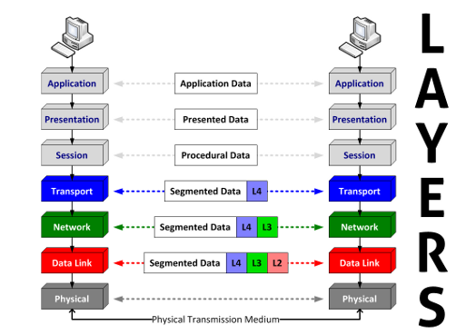
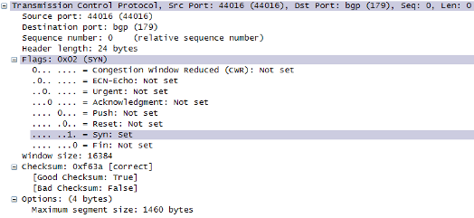
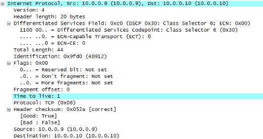
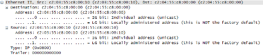

{kind=link}
{kind=link}
{kind=link}
{kind=link}
-
 CORPORATE INFO
CORPORATE INFO -
OUR SERVICES
-
STAY CONNECTED
-
CONTACT INFO
- E-mail:
Contact Us page - Telephone:
+1 972 863 CORE - Address:
3136 Round Tree Ln
Frisco, TX 75034-4589
- E-mail:
Overview of OSI Model
I frequent Hacki's forums and I've seen something that tends to be pretty common with most folks as they are learning their way in Networking. The OSI model tends to give a lot of people fits, since it's really abstract and doesn't seem practical at first. It's one of the items on the list of upcoming articles and I figure now is a good time to break things down so we can clearly see it in practice.
Why bother?
The OSI Model does provide some really DRY reading, if you want to bother reading the entirety of the standard as it's published by the ITU-T. But the OSI model in practice provides a really useful framework for several aspects of networking, including:
- Understanding which system components communicate in client-server applications
- Troubleshooting an application problem as it relates to network infrastructure
- Designing networks optimized for applications that could logically be hosted anywhere globally, are highly available, and resist the effects of latency introduced by wide-area networks.
- Among others…
In fact, the first two reasons are where most engineers will eventually see the greatest application of the OSI model in real life, since the model should provide a step-by-step method to determine where a problem lies end-to-end from client to server. First, let's talk about the model itself (very briefly) and we'll make it useful afterwards in the next article.
Model Overview
The standard described by ITU-T X.200 is a open, reference model for how systems connect to each other. The term reference model is probably convoluted to most, but the concept behind it is hiding complex, minute details of an entire system (or part of a system) so that the system can be broken into layers. Each layer has its own special focus and the complexities of each layer are hidden from the next layer (or at least the next layer doesn't require knowledge of the others). By taking this step, each layer of the model can be viewed and acted upon in a self-contained manner. It's like isolating the brake system of a car, where you know you don't have to examine the exhaust or spark plugs to fix a problem with the brakes (thankfully!). There are instances where one layer can negatively affect other layers, but we'll leave that discussion for a later article. In the OSI reference model, seven layers are defined that provide a really high-level view of how systems connect. What follows is my brief summary of the layers (listed, in my view, from top to bottom).
Application (think web browser, email client)
Application layer usually is the easiest to understand, so we should start our discussion here. This layer can be the program running on your computer (or on a server) that connects you to Google.com, eBay, or this blog. The client application will exchange data with the server application (and vice versa) without understanding Ethernet, TCP/IP, or other networking techniques (in general). This application data requires some processing locally before sending it to the server, care of the next several layers. I've provided examples next to the layer name, to help connect the layer to a common implementation.
Presentation (think encryption, compression)
Presentation layer provides formatting for data to be transferred between systems, so the end-system can readily receive and interpret the application data correctly. This step was vital when differing standards of data format were a problem (think 7-bit ASCII vs 8-bit EBCDIC). The most common examples now would be any encryption/decryption required for transmitting application data (not VPN-based, but application-based encryption) or the use of compression within applications transmitting data between systems.
Session (think Remote Procedure Calls)
Session layer provides a way for applications to "synchronize" their client-server communication and translate between "transport addresses" of Layer 4 and the "session addresses" that represent the application. If a system were running Firefox and Internet Explorer simultaneously, the session layer keeps Layer 4 connections associated with the right browser (or the pages displayed would be unusable in most cases). A good example of this layer are the remote procedure calls (RPC) associated with many client-server applications like Microsoft Exchange and Network File System (NFS).
Transport (think TCP/UDP segments)
Transport layer is the first real layer of "networking" (or last, from a bottom-up perspective), as most everything above Layer 4 is really geared toward the application. Before this layer, Layers 5-7 have dealt with a chunk of application data as a whole. One of the chief functions of this layer is to segment that data for transmission. Some protocols have a built-in maximum segment size (UDP has a byte-length field of 2 bytes, to represent length of 65535 including 8-byte header). Others can negotiate this length (TCP uses a option called Maximum Segment Size — or MSS — which can be sized big or small, depending on the host). If the application data is too large to fit in one segment, multiple segments are used for the single application data chunk. Each transport layer protocol has a different header format.
Network (think IP packets or datagrams)
Network layer provides logical abstraction for physical addressing of devices attached to a common Data Link network. If that doesn't clear things up, then let's use more practical terms. In essence, a pair of separate, Data Link networks can have a single, logical addressing scheme where all the hosts can communicate freely without requiring access to the same physical media to exchange packetized data between systems. So, communication between two systems does not require a knowledge of the physical interface address as with Layer 2. Instead, Layer 2 could be a completely different technology than the local system can support (such as Ethernet vs Token Ring). But a Layer 3 device (like a Router) could translate between both physical media and permit intersystem communication using logical addresses. Each segment received from Layer 4 is (generally) assigned a source and destination address, which represents the logical network segments on which each system resides. Other properties, such as header checksum and time-to-live, are also set based on system (and sometimes application) configuration. To repeat the earlier theme, the IP stack of a system does not need knowledge of the application protocol, encryption type, or other Layer 4-7 characteristics to provide a means of intersystem communication across large internetworks. As with the transport layer, each network layer protocol will have a different header format. Here's an example Layer 3 header in Wireshark:
Data Link (think Ethernet frames)
Data link layer provides the method for how data bits are placed on the wire as Frames. There are a lot of functions that occur at the data link layer, including error detection, negotiation of connection parameters, and many others. It's not important to discuss Data Link in depth, though I'll provide a article later that describes the difference between the two sublayers, known as Media Access Control (MAC) and Logical Link Control (LLC). It's really important to view this layer as localized, i.e. not spanning multiple networks. All data link connections exist either between just two systems (e.g. PPP, Frame Relay) or a group of systems via a media that provides access to multiple systems at once (e,g, Ethernet, Token Ring). These protocols generally interpret the first X number of bits in the frame to represent the source and destination physical addresses of the systems involved in the communication (this is less important in point-to-point connections). And it should come as no surprise that each data link protocol will have a different format for the bits that describe the data link payload. Here's an example Layer 2 header in Wireshark:
Physical (think hardware/bits)
Physical layer is the stuff you can touch. It's generally the real, physical stuff that makes up the basis of the system. In networking, this layer is a pathway for bits of data (1s and 0s) to flow between systems. Think hardware and bits when thinking physical layer. The two words that stand out to me from the standard are "mechanical" and "electrical". Every layer above this is really abstract by comparison, so physical layer components tend to be the more tangible. As such, no header is required for Physical layer communications, as only the mechanical/electrical components of a system are involved.
What does it all mean?
In the next article, I'll examine how to put these layers together to isolate and troubleshoot problems with your network and applications.